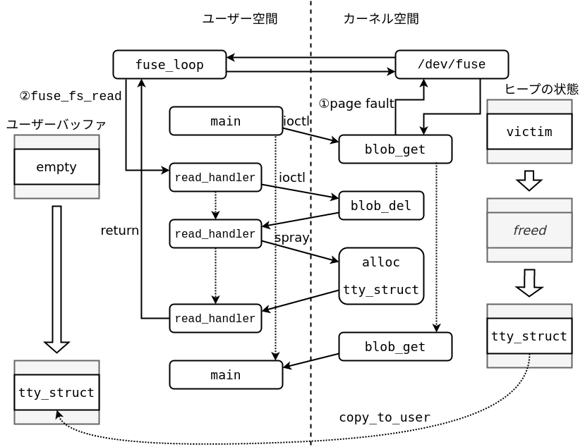
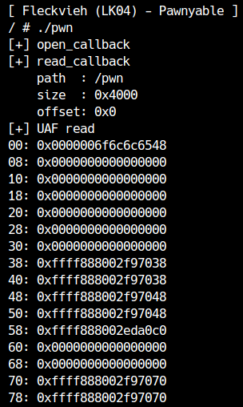
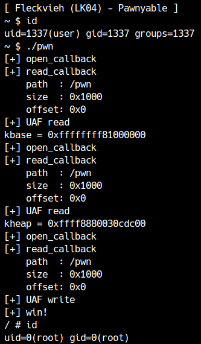

In the previous chapter, we used userfaultfd to stabilize the race in LK04 (Fleckvieh). In this chapter, we will exploit LK04 using a different method.
Disadvantages of userfaultfd
As explained briefly in the previous chapter, current Linux restricts userfaultfd for ordinary users. More precisely, an unprivileged user can detect page faults occurring in user space, but cannot detect page faults occurring in kernel space with a user-created userfaultfd. These restrictions were introduced by the security patches referenced below.
Therefore, this time we will use a mechanism called FUSE, which is one of the functions of Linux. First, let's learn what FUSE is.
What is FUSE?
FUSE (Filesystem in Userspace) is a Linux feature that lets user space implement a virtual file system. It is enabled by building the kernel with CONFIG_FUSE_FS.
A program uses FUSE to mount a file system, and the program’s handler is called when someone accesses a file in it. The structure is very similar to the character-device implementation from LK01[1].

Using FUSE
You can check your system’s FUSE version with the fusermount command.
1 | / $ fusermount -V |
To try FUSE on your local machine, install it with the following command. The target uses FUSE 2, so use fuse rather than fuse3.
1 | # apt-get install fuse |
You also need the FUSE headers to compile a FUSE program, so install them with the following command.
1 | # apt-get install libfuse-dev |
Now let’s use FUSE.
When an operation is performed on a file in a FUSE file system, the handler defined in fuse_operations is called. You can implement file operations such as open, read, write, and close; directory operations such as readdir and mkdir; and operations such as chmod, ioctl, and poll. For this exploit, implementing only open and read is sufficient. You must also define getattr to return information such as file permissions. Let’s examine the code.
1 |
|
Compile it with -D_FILE_OFFSET_BITS=64 as follows.
1 | $ gcc test.c -o test -D_FILE_OFFSET_BITS=64 -lfuse |
To run it in the distributed environment, you must also link it statically. Checking FUSE’s required libraries shows that pthread is needed.
1 | $ pkg-config fuse --cflags --libs |
Even after building with this option, the linker reports that functions related to dl are required.
1 | /usr/bin/ld: /usr/lib/gcc/x86_64-linux-gnu/10/../../../x86_64-linux-gnu/libfuse.a(fuse.o): in function `fuse_put_module.isra.0': |
Pay attention to the library order: put -ldl at the end of the command. Then FUSE can be used by GCC-built programs even in the distributed environment.
1 | $ gcc test.c -o test -D_FILE_OFFSET_BITS=64 -static -pthread -lfuse -ldl |
fuse_main parses the arguments and runs the main processing. Here, we will mount the file system at /tmp/test.
1 | $ mkdir /tmp/test |
If it works correctly, the program will wait without reporting an error. If an error occurs, check that the OS supports FUSE and that the FUSE version used during compilation matches.
From another terminal, you should be able to read /tmp/test/file.
1 | $ cat /tmp/test/file |
Because readdir is not implemented, you cannot list files under the mount point with ls. Because getattr is also not implemented for the root directory, the existence of /tmp/test itself is not visible.
The fuse_main used above is a helper function. If you do not want to specify the arguments each time, you can call the lower-level functions directly:
1 | int main() |
Use fuse_mount to choose the mount point and fuse_new to create a FUSE instance. Monitor events with fuse_loop_mt (mt means multithreaded). Do not forget to configure fuse_set_signal_handlers so monitoring exits when the program terminates. If execution does not reach the final fuse_unmount, the mount point will be left in a broken state.
Race stabilization
Now let’s consider how to use FUSE to stabilize an exploit.
The principle is the same as with userfaultfd. With userfaultfd, a page fault triggers the user-space handler; with FUSE, a file read triggers it.
If a FUSE-backed file is mapped with mmap without MAP_POPULATE, accessing the mapped area causes a page fault and eventually invokes read. This lets you switch contexts during a memory read or write, just as with userfaultfd.
This can be expressed graphically as follows.

The only difference from userfaultfd is that the handler is invoked through FUSE when the page fault occurs. Let’s use this to stabilize the race.
1 | cpu_set_t pwn_cpu; |
Compared with the code in the previous chapter, the structure is very similar. FUSE can therefore serve as an alternative to userfaultfd in exploits. When you run the code, you can see that part of a tty_struct is leaked.

As with userfaultfd,copy_to_user Because it is called with a large size, the beginning of the data cannot be leaked. As before, this can be solved by a small leak size.
Now, unlike userfaultfd, you have to be careful.read The point is that data is requested for the size mapped in . In userfaultfd, a fault occurred for each page size (0x1000). So, for example, if you want to call the fault handler 3 times, you only need 0x3000 bytes.mmap It's fine if you do.
However, in the case of FUSE, a request for 0x3000 bytes is executed on the first fault, so no page faults occur thereafter. This problem can be easily resolved by reopening the file.
Since you will be opening the file many times, let's turn it into a function.
1 | int pwn_fd = -1; |
The rest is basically the same as for userfaultfd. userfaultfd copy.src The operation when setting is FUSE.memcpy This can be achieved by copying the data to the user buffer with .
Try completing the exploit yourself.

The sample exploit code can be downloaded here.
There is also a mechanism called CUSE that virtually registers character devices in user space.↩︎